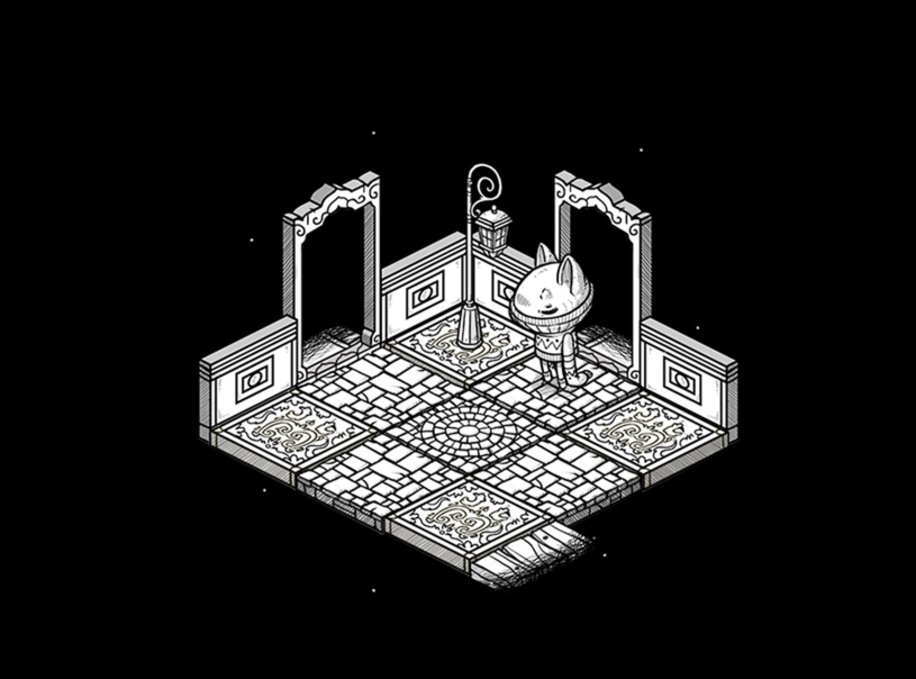
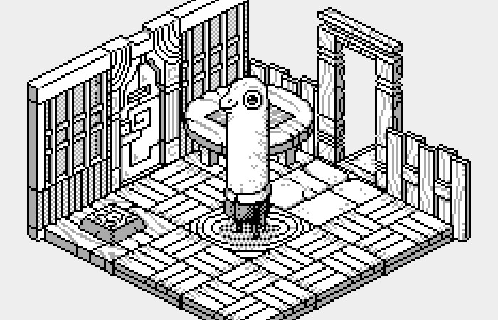
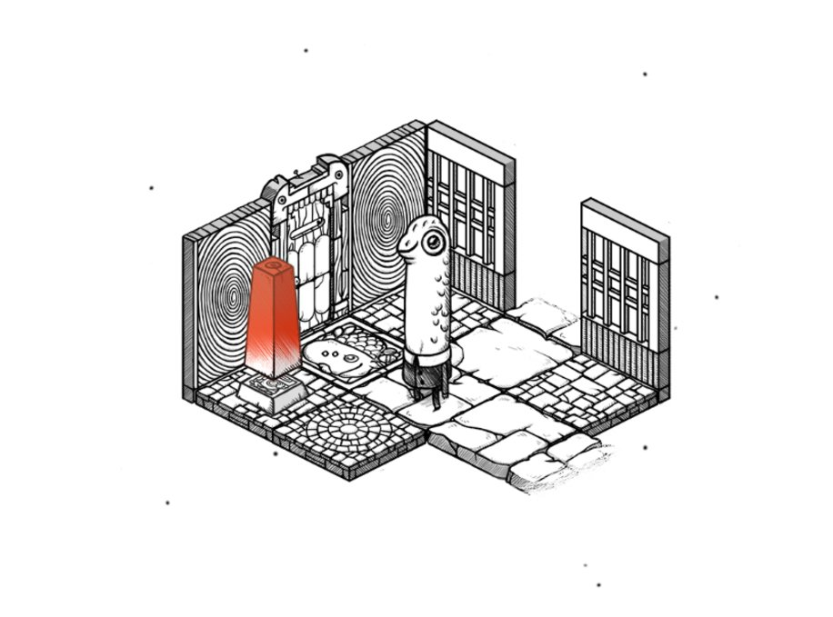
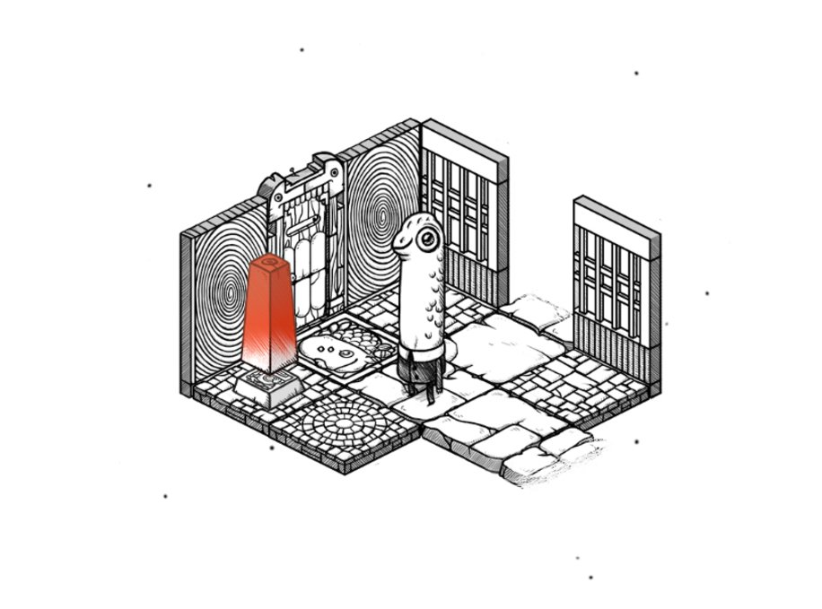

oquonie
introduction
Oquonie is a textless isometric puzzle game.
You must make your way through a seemingly endless succession of rooms. You will not be alone. Your incarnations will have the help of bizaroid characters that speak an obscure language.
trailer
download
inspiration
We made Oquonie while living in Japan. The game was our first collaborative project, and a reflection of our experience navigating a new country, with language as a recurrent obstacle. Oquonie is about being lost in a foreign space.
A big inspiration for this project was the short story 'A town without streets' by Junji Ito, about a city of endless interconnecting houses and rooms, where privacy is non-existent. To preserve the little privacy they do have, the townspeople wear masks.
production
Back in 2013, we both had full-time jobs in different studios in Tokyo, we worked on Oquonie after work, and on weekends, for a total of 6 months. It was Devine's second time programming a full game, after Hiversaires, and first time working with animated sprites. It was Rekka's first ever self-published game.
Oquonie was released on February 14th 2014, on the iTunes Store. We spent many more hours on the game after the release, adding extra content and porting it to other platforms, all thanks to our collaborator and friend Rez Mason. The game was nominated for an IGF award in 2015, for visual excellence.
In 2018, as were were sailing around the Pacific Ocean, we removed the game from the iOS store in a conscious attempt to distance ourselves from the Apple ecosystem. After looking at the trajectory of the development tools, namely the bloated development environment, we did not believe that it was possible for us to continue working on our games, while at sea with little connectivity for the Apple mobile platform.
We also could not reconcile pushing for environmentally conscious action, while supporting a company that fights against the Right to Repair, creates wasteful products, and that is hostile to indie game developers. Instead, the game was published exclusively on the Itch.io store, a publishing platform in line with our values.
In January 2023, nearly 10 years after its first release, we started porting the game to uxn. The project is currently underway, and will playable on all platforms, new and old. Porting Oquonie to Uxn requires some work, but the style translates vey well to pixel art. Re-building the game will permit us to improve it, and ensures that it continues to be playable. See a video(Mastodon) of the game being played.
screenshots
 
